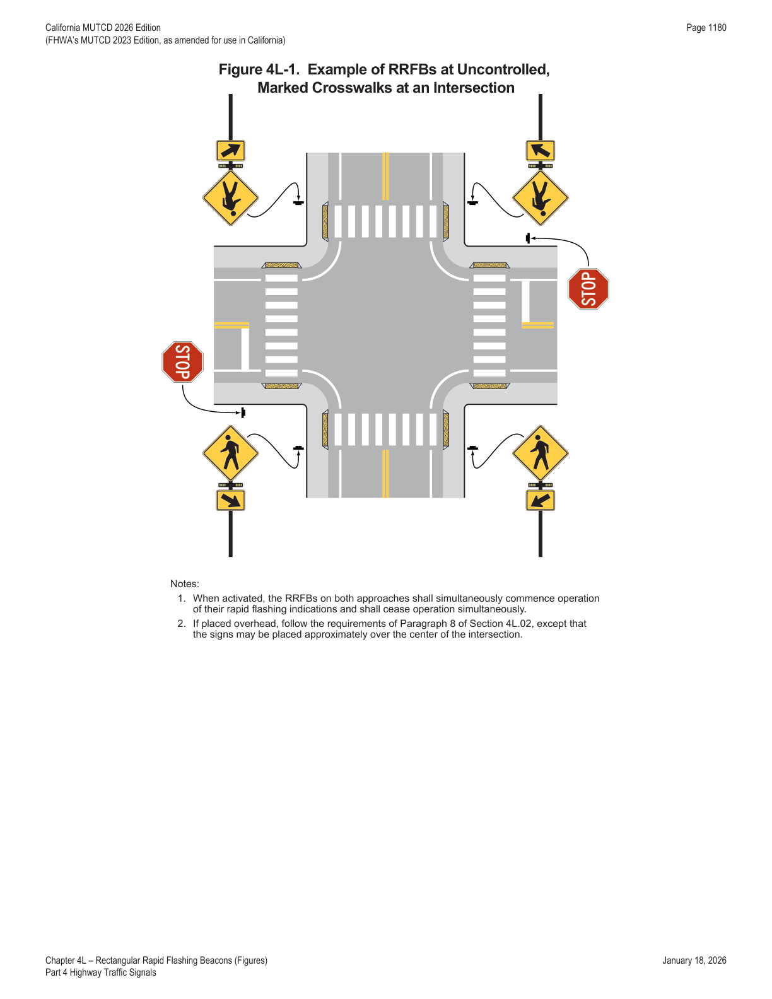
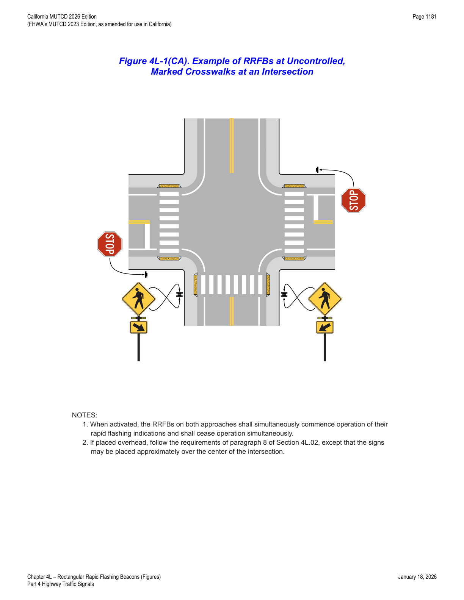

Part 4 · Highway Traffic Signals · Chapter 4L
Rectangular Rapid Flashing Beacons
Application, design, and rapid-flash operating sequence for RRFBs used to supplement pedestrian, school, and trail crossing warning signs at uncontrolled marked crosswalks.
4L.01Application of Rectangular Rapid Flashing Beacons
Option — Permissive
- 01A pedestrian-activated and/or bicyclist-activated rectangular rapid flashing beacon (RRFB) may be used to provide supplemental emphasis to pedestrian, school, and trail warning signs at marked crosswalks across uncontrolled approaches.
Standard — Mandatory Requirement
- 02An RRFB shall only be installed to function as a Warning Beacon (see Section 4S.03). Except as otherwise provided in this Chapter, all other provisions of the MUTCD applicable to Warning Beacons shall apply to RRFBs.
- 03An RRFB shall only be used to supplement a post-mounted W11-2 (Pedestrian), S1-1 (School), or W11-15 (Trail) crossing warning sign with a diagonal downward arrow (W16-7P) plaque, or an overhead-mounted W11-2, S1-1, or W11-15 crossing warning sign, located at or immediately adjacent to a marked crosswalk.
- 04Except for crosswalks across the approach to or egress from a roundabout, or crosswalks across free-flow turn lanes separated by a channelizing island, an RRFB shall not be used for crosswalks across approaches controlled by YIELD signs, STOP signs, traffic control signals, or pedestrian hybrid beacons.
Option — Permissive
- 05An additional RRFB may be installed on that approach in advance of the crosswalk, as a Warning Beacon to supplement a W11-2 (Pedestrian), S1-1 (School), or W11-15 (Trail) crossing warning sign with an AHEAD (W16-9P) or distance (W16-2P or W16-2aP) plaque.
Standard — Mandatory Requirement
- 06If an additional RRFB is installed on the approach in advance of the crosswalk, it shall be supplemental to and not a replacement for the RRFB at the crosswalk itself.
4L.02Design of Rectangular Rapid Flashing Beacons
Standard — Mandatory Requirement
- 01Each RRFB unit shall consist of two rapidly-flashed rectangular-shaped yellow indications, each with an LED-array based pulsing light source. The size of each RRFB indication shall be at least 5 inches wide by at least 2 inches high.
- 02The two RRFB indications for each RRFB unit shall be aligned horizontally, with the longer dimension horizontal and with a minimum space between the two indications of at least 7 inches, measured from nearest edge of one indication to the nearest edge of the other indication. The outside edges of the RRFB indications, including any housings, shall not project beyond the outside edges of the W11-2, S1-1, or W11-15 sign that it supplements.
- 03An RRFB unit shall not be installed independent of the crossing warning signs for the approach that the RRFB faces. If the RRFB unit is supplementing a post-mounted sign, the RRFB unit shall be installed on the same support as the associated W11-2, S1-1, or W11-15 crossing warning sign and plaque. If the RRFB unit is supplementing an overhead-mounted sign, the RRFB unit shall be mounted directly above the top of sign or below the bottom of the sign.
Option — Permissive
- 04As a specific exception to Paragraph 6 of Section 4S.01, the RRFB unit associated with a post-mounted sign and plaque may be located between and immediately adjacent to the bottom of the crossing warning sign and the top of the supplemental downward diagonal arrow plaque (or, in the case of a supplemental advance sign, the AHEAD or distance plaque) or within 12 inches above the crossing warning sign, rather than the recommended minimum of 12 inches above or below the sign assembly.
- 05Signal visors and backplates, with or without a yellow retroreflective strip, may be used with RRFB units based on provisions in Section 4D.06.
Standard — Mandatory Requirement
- 06For any approach on which RRFBs are used to supplement post-mounted signs, at least two W11-2, S1-1, or W11-15 crossing warning signs (each with an RRFB unit and a W16-7P plaque) shall be installed at the crosswalk, one on the right-hand side of the roadway and one on the left-hand side of the roadway.
Guidance — Recommended Practice
- 07On a divided highway, the left-hand side RRFB assembly should be installed on the median, if practicable, rather than on the far left side of the highway.
Standard — Mandatory Requirement
- 08For any approach on which RRFBs are used to supplement an overhead-mounted sign, at least one W11-2, S1-1, or W11-15 crossing warning sign (without a W16-7P plaque) located approximately over the center of the lanes of the approach (or where optimum visibility can be achieved) shall be installed at the crosswalk.
- 09If used at intersections, the design of the RRFBs shall conform to the requirements for post-mounted or overhead placement described in Paragraph 3 of this Section.
Option — Permissive
- 10RRFBs may be installed at intersections with more than one crosswalk on the same uncontrolled approach (see Figure 4L-1).
- 11If used at intersections with two crosswalks on an uncontrolled approach, post-mounted RRFBs may be installed to face only one direction of travel at the first crosswalk that traffic encounters (see Figure 4L-1).
Standard — Mandatory Requirement
- 12The light intensity of the yellow indications during daytime conditions shall meet the minimum specifications for Class 1 yellow peak luminous intensity in the publication "Directional Flashing Optical Warning Devices for Authorized Emergency, Maintenance, and Service Vehicles J595," 2005, Society of Automotive Engineers (SAE).
Option — Permissive
- 13If the RRFB indications are so bright that they cause excessive glare during nighttime conditions, an automatic signal dimming device may be used to reduce the brilliance of the RRFB indications during nighttime conditions.
Support — Background/Explanatory
- 13aRefer to Section 1D.04 for light brilliance and CVC §§ 21466.5 and 21467.
Standard — Mandatory Requirement
- 14If pedestrian push button detectors (rather than passive detection) are used to actuate the RRFB indications, a PUSH BUTTON TO TURN ON WARNING LIGHTS/AWAIT GAP IN TRAFFIC (R10-25) sign (see Section 2B.58) shall be installed explaining the purpose and use of the pedestrian push button detector.
Support — Background/Explanatory
- 14aRefer to FHWA's List of Known Errors for error in Paragraph 14 text. Refer to Section 1A.04 for more details.
- 15Section 4I.05 contains further information about pedestrian push button detector location criteria.
- 16Section 4H.12 contains information about bicyclist push buttons.
Guidance — Recommended Practice
- 16aWhere a RRFB is located 200 feet or less from a grade crossing, an engineering study should be made to evaluate the placement and determine if queuing could impact the grade crossing.
- 17An audible information device should be used with RRFBs to assist pedestrians with vision disabilities.
Option — Permissive
- 18A small light directed at and visible to pedestrians in the crosswalk may be installed integral to the RRFB or pedestrian push button detector to give confirmation that the RRFB is in operation.


4L.03Operation of Rectangular Rapid Flashing Beacons
Standard — Mandatory Requirement
- 01The RRFB shall be normally dark, shall initiate operation only upon pedestrian actuation, and shall cease operation at a predetermined time after the pedestrian actuation or, with passive detection, after the pedestrian clears the crosswalk.
- 02All RRFB units associated with a given crosswalk (including those with an advance crossing sign, if used) shall, when activated, simultaneously commence operation of their rapid flashing indications and shall cease operation simultaneously.
Guidance — Recommended Practice
- 03The minimum duration of a predetermined period of operation of the RRFBs following each actuation should be based on the procedures for the timing of pedestrian clearance times for pedestrian signals (see Section 4I.06).
Support — Background/Explanatory
- 04One consideration for lengthening the duration of the predetermined period of operation of the RRFBs is adding the perception/reaction time for pedestrians to confirm that a vehicle will yield or stop.
Standard — Mandatory Requirement
- 05The predetermined flash period shall be immediately initiated each and every time that a pedestrian is detected either through passive detection or as a result of a pedestrian pressing a push button detector, including when pedestrians are detected while the RRFBs are already flashing and when pedestrians are detected immediately after the RRFBs have ceased flashing.
- 06When activated, the two yellow indications in each RRFB unit shall flash in a rapidly flashing sequence. As a specific exception to the requirements for the flash rate of beacons provided in Paragraph 3 of Section 4S.01, RRFBs shall use a much faster flash rate and shall provide 75 flashing sequences per minute.
- 07Except as provided in Paragraph 8 of this Section, during each 800-millisecond flashing sequence, the left and right RRFB indications shall operate using the following sequence:
- A. The RRFB indication on the left-hand side shall be illuminated for approximately 50 milliseconds.
- B. Both RRFB indications shall be dark for approximately 50 milliseconds.
- C. The RRFB indication on the right-hand side shall be illuminated for approximately 50 milliseconds.
- D. Both RRFB indications shall be dark for approximately 50 milliseconds.
- E. The RRFB indication on the left-hand side shall be illuminated for approximately 50 milliseconds.
- F. Both RRFB indications shall be dark for approximately 50 milliseconds.
- G. The RRFB indication on the right-hand side shall be illuminated for approximately 50 milliseconds.
- H. Both RRFB indications shall be dark for approximately 50 milliseconds.
- I. Both RRFB indications shall be illuminated for approximately 50 milliseconds.
- J. Both RRFB indications shall be dark for approximately 50 milliseconds.
- K. Both RRFB indications shall be illuminated for approximately 50 milliseconds.
- L. Both RRFB indications shall be dark for approximately 250 milliseconds.
- 08The flash rate of each individual RRFB indication, as applied over the full flashing sequence, shall not be more than 5 flashes per second, to avoid frequencies that might cause seizures.
- 09If an audible information device is used in conjunction with an RRFB, the audible information device shall not use vibrotactile indications or percussive indications.
Guidance — Recommended Practice
- 10If an audible information device is used in conjunction with an RRFB, the audible message should be a speech message that says, "Warning lights are flashing." The audible message should be spoken twice.
| Step | Left indication | Right indication | Duration |
|---|---|---|---|
| A | On | Off | ~50 ms |
| B | Off | Off | ~50 ms |
| C | Off | On | ~50 ms |
| D | Off | Off | ~50 ms |
| E | On | Off | ~50 ms |
| F | Off | Off | ~50 ms |
| G | Off | On | ~50 ms |
| H | Off | Off | ~50 ms |
| I | On | On | ~50 ms |
| J | Off | Off | ~50 ms |
| K | On | On | ~50 ms |
| L | Off | Off | ~250 ms |
In practice: the distinctive rapid "wig-wag" flash pattern (alternating left-right double flashes followed by a simultaneous double flash) totals 800 milliseconds and repeats 75 times per minute — this is the specific visual signature that distinguishes an RRFB from a standard Warning Beacon (which flashes at only 50–60 times per minute) and from emergency vehicle lighting.
★ Key Takeaways — Chapter 4L
- An RRFB is legally a type of Warning Beacon — it must always supplement a W11-2 (Pedestrian), S1-1 (School), or W11-15 (Trail) sign at a marked crosswalk, and cannot be used at approaches controlled by YIELD, STOP, traffic signals, or pedestrian hybrid beacons (with narrow roundabout/free-flow-turn-lane exceptions).
- Each RRFB unit has two yellow rectangular LED indications, each at least 5 in. wide × 2 in. high, spaced at least 7 inches apart, mounted on the same support as the sign it supplements; a minimum of two crossing-warning-sign-plus-RRFB assemblies (left and right sides) are required per approach.
- Distinctive operation: normally dark, pedestrian-actuated, 75 flashing sequences per minute (much faster than the standard 50–60/minute beacon rate) in a specific alternating left-right-simultaneous pattern, with the per-indication flash rate capped at 5 flashes/second to avoid photosensitive seizure triggers.
- Daytime brightness must meet SAE J595 Class 1 yellow peak luminous intensity; a push-button-actuated RRFB requires an R10-25 sign explaining its purpose.
- An audible information device used with an RRFB must be a spoken message ("Warning lights are flashing," spoken twice) — never a vibrotactile or percussive-tone device.